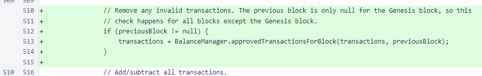
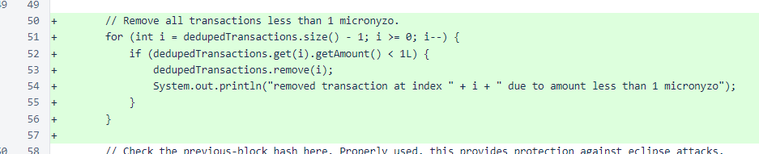

Nyzo version 488 (commit on GitHub) adds use of the BalanceManager.approvedTransactionsForBlock() method for blocks produced by other verifiers.
This version affects both the verifier and the sentinel.
A member of the community, reviewing the Nyzo code, noticed that the approvedTransactionsForBlock() method of the BalanceManager class was not in the code path for blocks originating from other verifiers. This method was only used for blocks created locally by the verifier and sentinel processes. This was an unintentional oversight in the code, and the release notes for version 479 state clearly that the method is supposed to be in the code paths for both locally produced blocks and blocks produced by other systems.
After a verifier or sentinel has started tracking the blockchain, no balance lists are received from other systems. They are all calculated locally, and the hash of the locally produced balance list is compared against the hash of the balance list in blocks produced by other systems. This means that the balance list derivation process can be used for removing invalid transactions.
In the balanceListForNextBlock method of the Block class, an invocation of the approvedTransactionsForBlock method was added before the processing of transactions. The previousBlock variable is only null for the Genesis block, so this method will be called for all new blocks. You can confirm that previousBlock is only null for the Genesis block by looking at the code earlier in this same method, where blockHeight is set to 0 when previousBlock is null.
While the omission of this method in the code path for incoming blocks was a serious mistake, there are no practical avenues of attack enabled by it. Other checks in the code, intended as redundancies, were protecting against malicious transactions that might have been injected into blocks produced by other verifiers.
Additionally, the seed-funding account protections introduced version 479 would not be effective against transactions in received blocks with the error in the code. Our test cases for version 479 all passed due to other protections and the fact that we were unable to test transactions with valid signatures from the seed-funding account, as we do not have the private key for the account. However theoretical, this version does close that vulnerability.
As an additional redundancy, one more change was added to this version. In the approvedTransactionsForBlock method, all transactions under µ1 are removed. A combination of other logic in the balance list calculation was already protecting against malicious transactions with negative values, but explicit removal of such transactions is prudent.
For this issue, ∩100,000 was awarded to 0000...f116.